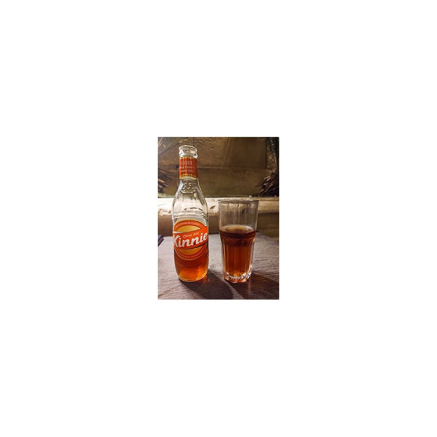

Import OnlyKinnie · Malta
Bittersweet carbonated soda brewed from bitter oranges and wormwood extracts, sold since 1952 in glass…
Malta's national soft drink, produced in Malta and exported only as a specialty item — no regular US grocery distribution.
Bittersweet carbonated soda brewed from bitter oranges and wormwood extracts, sold since 1952 in glass bottles, cans, and PET. Malta's national soft drink, produced in Malta and exported only as a specialty item — no regular US grocery distribution. Made by Simonds Farsons Cisk.$2.99
Add it to your cart here, or open the find for eBay and direct-seller options.
✓ Availability: sold new — listings vary by seller · Last checked Oct 16, 2026